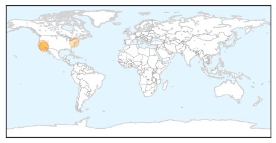
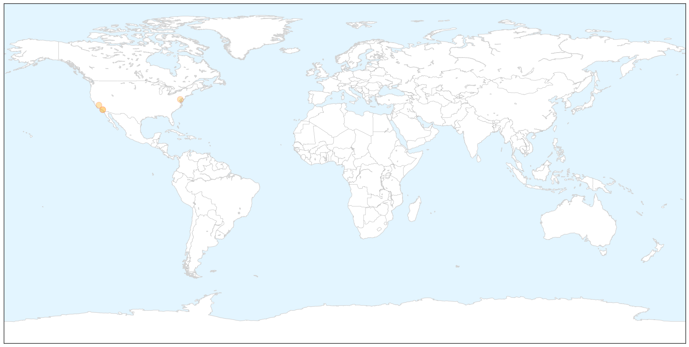
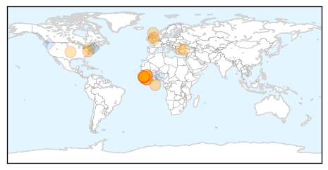

West Nile Virus
30-Day Web Trend
1 alerts, 0 warnings

30-Day Twitter Trend
0 alerts, 0 warnings

Article Locations

X

Article Confidences

Top Articles:
Top Tweets:
-
No tweets found for Sep 16, 2015
Ebola
30-Day Web Trend
0 alerts, 0 warnings

30-Day Twitter Trend
0 alerts, 0 warnings

Article Locations

Article Confidences

Top Articles:
- 0.999
- Over 680 people quarantined after 16-year-old dies from ebola
- 0.998
- Rapid response to new Ebola infection in Bombali, Sierra Leone
- 0.998
- A resurgence of Ebola in Sierra Leone Bombali district
- 0.998
- Sierra Leone's Brave, Young Doctors Who Battled Ebola — NOVA Next
- 0.998
- Ebola test results on Leicester patient are negative
- 0.997
- Infectious disease physician talks about caring for Ebola patien
- 0.997
- Rapid response to new Ebola infection in Bombali, Sierra Leone - Sierra Leone
- 0.994
- Sierra Leone quarantines 700 after new Ebola death
- 0.993
- The aftermath of Ebola sparks a rethink about aid
- 0.991
- New Ebola outbreak as Sierra Leone quarantines 700 after teen’s death
- 0.980
- ARLnow.com
- 0.980
- Coincident polio and Ebola crises expose similar fault lines in the current global health regime - World
- 0.978
- Monitoring and Evaluation
- 0.974
- Vanishing Act: Several Vehicles Donated to Fight Ebola Gone
- 0.956
- Ebola heroes recognised with parliamentary march
- 0.952
- VSO Building Confidence in Communities, Promotes Infection Prevention and Control in Health Facilities
- 0.887
- DARPA Developing Human Bio-Factories
- 0.800
- LIBERIA: World Bank Group President Outlines Post-Ebola Development Initiatives
- 0.781
- Welcome to the Expotimes News
- 0.757
- Bavarian Nordic wins up to $33m to develop J&J Ebola vaccine
- 0.744
- Fund launched to seek cures for African diseases
- 0.707
- H.E. AMBASSADOR OMRIE GOLLEY ENGAGES KOREA'S MINISTER FOR OCEANS AND FISHERIES TO INCREASE BILATERAL COOPERATION IN THE FISHERIES AND MARITIME SECTOR
- 0.700
- US Citizens Alerted Of Potential Travel Implications In Ebola-hit West Africa
- 0.648
- Islamic State could use the plague as a 'weapon against the UK'
Top Tweets:
- 0.854
- New Ebola death in Sierra Leone - Ledger Gazette http://t.co/10VvmZkyTV ebola EVD
- 0.842
- Sierra Leone reported 5 Ebola cases in the week ending Sept. 13; 4 of 5 were exposed via a "community death" Total up from recent wks. @WHO
- 0.831
- Infectious disease physician talks about caring for Ebola patients treated in ... - KTIV http://t.co/nJE4xww7lM ebola EVD
- 0.763
- Suspected case of Ebola: tests prove negative - Leicester Mercury http://t.co/nod4I6NWGW ebola EVD
- 0.759
- Sierra Leone quarantines hundreds after new Ebola death - Yahoo! Maktoob News http://t.co/b84ifyX5m5 ebola EVD
- 0.727
- Team applies Ebola genetic sequencing methods to shed light on spread of Lassa ... - Medical Xpress http://t.co/NE2fPzaLEx ebola EVD
- 0.690
- Patient tested for Ebola after being admitted to Leicester Royal Infirmary - Leicester Mercury http://t.co/ZimVog3URL ebola EVD
- 0.552
- Ebola doctor Freeman Osonuga talks Ebola's future http://t.co/8eaGilfsMw
- 0.505
- RT: Ebola doctor Freeman Osonuga talks Ebola's future http://t.co/8eaGilfsMw